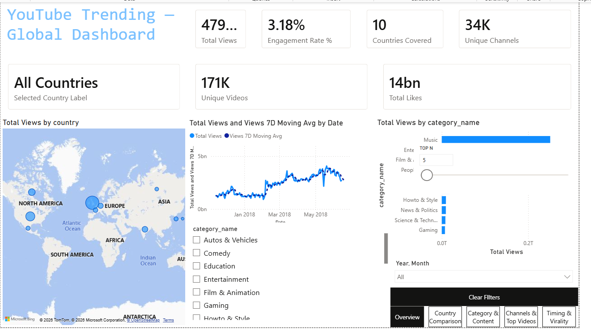
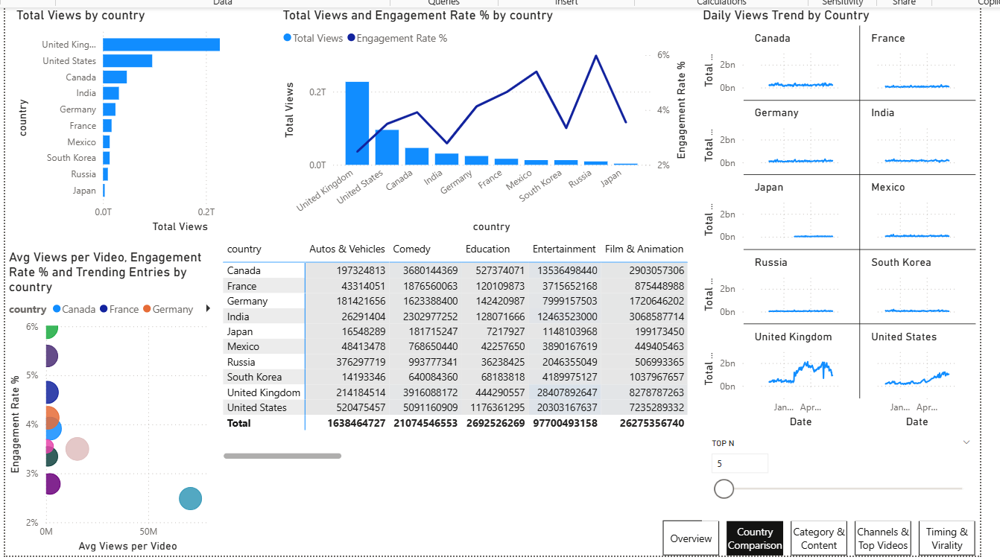
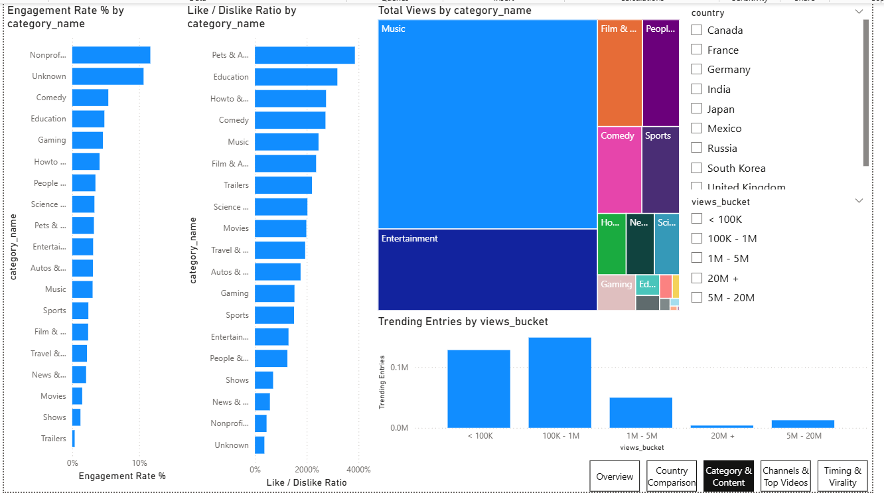
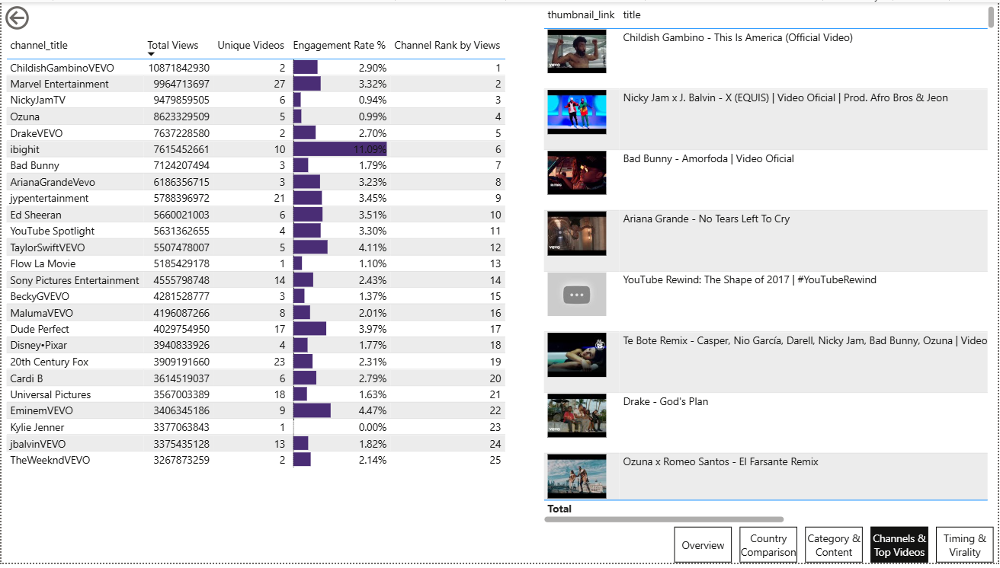
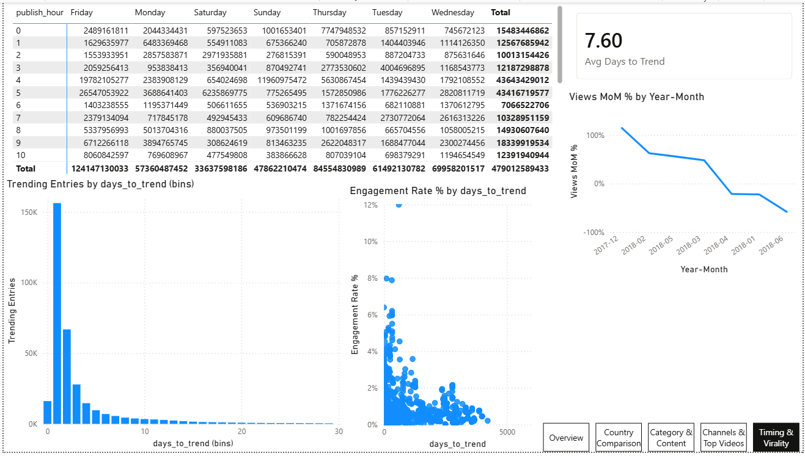

The dataset I started with was US-only. That felt like reading one page of a ten-chapter book — so I joined all 10 countries, scrubbed the mess out of 376k rows, and built a Power BI dashboard to see what the planet really hits play on. Short answer: music. Long answer: it gets weird.
No charts in this section on purpose — just the takeaways, in plain English.
Across every country, Music & Entertainment eat the lion's share of trending views. Not a shock — but the scale of the gap was.
India and Russia lean hard into Entertainment and Film; the US and UK skew to Music and Comedy. Russia's trending tab basically reads like a different website.
Music wins on raw views, but Nonprofits & Education quietly post the highest engagement rate. Reach ≠ a crowd that actually cares.
Median time from upload to trending is ~1 day. A handful of old videos resurface months later and drag the average to ~7.6, but the typical hit blows up fast.
Most trending videos live in the 100K–1M band. The 20M+ monsters everyone remembers? A thin sliver of the data.
Here's the actual report. Each page gets a quick "what am I looking at" and the filters & tooltips that make it tick. Click any screenshot to blow it up.

The 10,000-foot view. If you only look at one page, make it this one.
KPI cards, a world map of views, a daily-views line with a 7-day moving average to kill the noise, and the top categories. The subtitle even rewrites itself to name whichever country you've filtered to.

Where the "every country is its own internet" idea actually shows up.
A dual-axis combo pits reach against engagement, a colour-coded matrix shows what each country over-indexes on, and a scatter sorts everyone into four quadrants. The small multiples line up all 10 daily trends side by side.

The "reach isn't love" argument, in chart form.
Engagement % and like/dislike ratio by category, a treemap of total views (Music swallows it), and a histogram of how big trending videos actually get.

The receipts. Actual thumbnails, actual numbers.
Top channels ranked with data bars, and a video table with real thumbnails pulled in via image URLs. This is also the drill-through target — right-click a category or country anywhere else and land here, pre-filtered.

When to hit "publish," and how fast things catch.
A weekday × hour heatmap of the best publishing windows, a days-to-trend histogram, and a scatter asking whether trending fast means trending better.
This page is a gallery; the real Power BI file does all of this live.
Country, Category, Year-Month, View-bucket — and they're synced, so one pick follows you across every page.
Click any bar, tile or bubble and the rest of the page reacts. Click again to let go.
Hover for the exact numbers. A few visuals pop a little mini-dashboard on hover.
Right-click a country or category → jump straight to the detail page, pre-filtered.
Real data is a liar. Of the 376k rows I started with, 19,503 were broken, empty, duplicated, or claimed a video had more likes than views — gone. Another ~3,400 had encoding so mangled that Japanese and Cyrillic titles showed up as ransom-note gibberish; ftfy patched those back to real text. What's left is 342,656 rows with zero nulls — boring to look at, which is exactly the point.
If you want the gory details, the whole pipeline is one readable Python file (cleaning_all_countries.py) and the dashboard build is documented step by step in BUILD_GUIDE.md.
scrolled all the way down here? say hi → munish03patwa@gmail.com